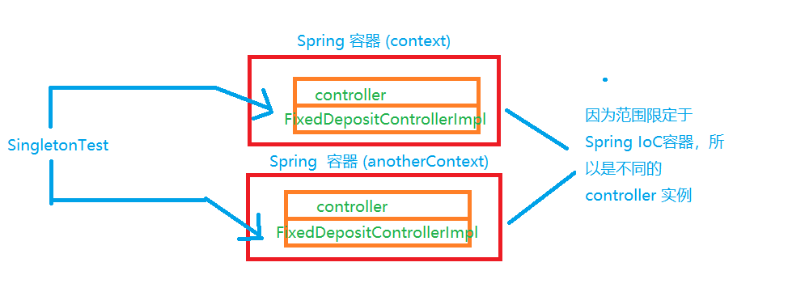

在上一章中，我们看到了一个依赖于其他类的POJO类包含了对其依赖项的具体类的引用。例如，FixedDepositController 类包含 对 FixedDepositService 类的引用，FixedDepositService 类包含对 FixedDepositDao 类的引用。如果这个依赖于其他类的类直接引用其依赖项的类，则会导致类之间的紧密耦合。这意味着如果要替换其依赖项的其他实现，则需要更改这个依赖于其他类的类本身。
我们知道 Java 接口定义了其实现类应遵循的契约。因此，如果一个类依赖于其依赖项实现的接口，那么当替换不同的依赖项实现时，类不需要改变。一个类依赖于由其依赖项所实现的接口的应用程序设计方法称为 "面向接口编程"。这种设计方法使得依赖类和依赖项之间松耦合。由依赖项类实现的接口称为依赖接口。
和 ”面向类编程“ 相比，”面向接口编程“ 是更加良好设计实践，下图表明 ABean 类依赖于 BBean 接口而不是 BBeanImpl 类(BBean接口的实现)。
下图中，FixedDepositJdbcDao 单纯的使用 JDBC, 而 FixedDepositHibernateDao 使用 Hibernate ORM 进行数据库交互。如果 FixedDepositService 直接依赖于 FixedDepositJdbcDao 或 FixedDepositHibernateDao,当需要切换与数据库交互的策略时，则需要在 FixedDepositService 类中进行必要的更改。FixedDepositService 依赖于 FixedDepositJdbcDao 和 FixedDepositHibernateDao 类实现 FixedDepositDao 接口（依赖接口）。现在，通过使用单纯的 JDBC 或 Hibernate ORM 框架，你可以向 FixedDepositService 实例提供 FixedDepositJdbcDao 或 FixedDepositHibernateDao实例。
由于 FixedDepositService 依赖于 FixedDepositDao 接口，因此将来可以支持其他数据库交互策略。如果决定使用iBATIS(mybaits)持久性框架进行数据库交互，那么可以使用IBATIS，而不需要对FixedDepositService 类进行任何更改，只需要创建一个 FixedDepositDao 接口的 FixedDepositIbatisDao 类，并将 FixedDepositIbatisDao 的实例提供给 FixedDepositService 实例。
现在来看看 ”面向接口编程“ 是如何提高依赖类的可测试性的。
在上图中，FixedDepositSerivce 类保留了对 FixedDepositDao 接口的引用。FixedDepositJdbcDao 和 FixedDepositHibernateDao 是 FixedDepositDao 接口的具体实现类。现在，为了简化 FixedDepositService 类的单元测试，我们可以把原来对具体数据库操作的实现去掉，用一个实现了 FixedDepositDao 接口但是不需要数据库的代码来代替。
如果 FixedDepositService 类直接引用 FixedDepositJdbcDao 或 FixeDepositHibernateDao 类，那么测试 FixedDepositService 类则需要设置数据库以进行测试。这表明通过对依赖接口的模拟依赖类实现，你可以减少针对单元测试的基础设施设置的工作量。
现在来看看 Spring 如何在应用程序中使用 “面向接口编程” 的设计方法，你需要执行以下操作：
1.创建引用依赖接口，而不是依赖项的具体实现的 bean 类；
2.定义
上图中，显示了一个类依赖于依赖项实现的接口，而不是依赖于具体的依赖项实现类。例如，FixedDepositControllereImpl 类依赖于 FixedDepositService 接口， FixedDepositServiceImpl 类依赖于 FixedDepositDao 接口。
public class FixedDepositServiceImpl implements FixedDepositService{
private FixedDepositDao fixedDepositDao;
public void setFixedDepositDao(FixedDepositDao fixedDepositDao){
this.fixedDepositDao = fixedDepositDao;
}
public FixedDepositDetails getFixedDepositDetails(long id){
return fixedDepositDao.getFixedDepositDetails(id);
}
public boolean createFixedDeposit(FixedDepositetails fdd){
return fixedDepositDao.createixedDeposit(add);
}
} 在上面代码中， FixedDepositServiceImpl 包含对 FixedDepositDao 接口的引用。要注入到 FixedDepositServiceImpl 实例中的 FixedDepositServiceImpl 实例中的 FixedDepositDao 具体实现，则在应用程序上下文 XML 文件中指定。如上图所示。可以注入以下 FixedDepositDao 接口的具体实现：FixedDepositIbatisDao、FixedDepositJdbcDao 和 FixedDepositHibernateDao。
下面的 展示以下将 FixedDepositHibernateDao 注入到 FixedDepositServiceImpl 中的 applicationContext.xml
<?xml version="1.0" encoding="UTF-8" standalone="no"?>
<beans ....>
<bean id="controller"
class="sample.spring.chapter02.bankapp.controller.FixedDepositControllerImpl">
<property name="fixedDepositService" ref="service"/>
</bean>
<bean id="service" class="sample.spring.chater02.bankapp.service.FixedDepositServiceImpl">
<property name="fixedDepositDao" ref="dao"/>
</bean>
<bean id="dao" class="sample.spring.chapter02.bankapp.dao.FixedDepositHibernateDao">
</bean>
</beans> 上述的 applicationContext.xml 文件显示了 FixedDepositHibernateDao (一个 FixedDepositDao接口的实现) 的一个实例被注入 FixedDepositServiceImpl 中。现在，如果决定使用 IBATIS 代替 Hibernate 进行持久化，那么所需要做的就是将 dao bean 定义的 class 修改为 FixedDepositIbatisDao 类的完全限定名。
Spring 容器可以创建和管理任何类的实例。而不管类是否提供无参数构造函数。在下一个小节中。我们将介绍在告知函数中可以接收一个或多个参数的 bean 类的定义。如果现有的 Java 应用程序工厂类来创建对象实例，那么仍然可以使用 Spring 容器来管理由这些工厂创建的对象。
现在来介绍一下 Spring 容器如何调用类的静态或实例工厂方法来管理返回的对象实例。
上面的图中，展示了如何使用 FixedDepositHibernateDao、FixedDepositIbatisDao 和、FixedDepositJdbcDao 类实现 FixedDepositDao 接口。下面代码中的 FixedDepositDaoFactory 类定义了一个静态工厂的方法。改静态方法根据传入的参数来创建和返回 FixedDepositDao 实例。
public class FixedDepositDaoFactory{
private FixedDepositDaoFactory(){
}
public static FixedDepositDao getFixedDepositDao(String daoType,...){
FixedDepositDao fixedDepositDao = null;
if("jdbc".equalsIgnoreCase(daoType)){
fixedDepositDao = new FixedDepositJdbcDao();
}
if("hibernate".equisIgnoreCase(daoType)){
fixedDepositDao = new FixedDepositHibernateDao();
}
...
return fixedDepositDao;
}
} 在上面代码中，FixedDepositDaoFactory 类定义了一个 getFixedDepositDao 静态方法，该方法根据 daoType 参数的值创建并返回 FixedDepositJdbcDao、FixedDepositHibernateDao 或 FixedDepositIbatisDao 类的实例。
在下面代码中。 FixedDepositDaoFactory 类的 bean 定义指示 Spring 容器调用 FixedDepostDaoFactory 的 getFixedDepositDao 方法，以获取 FixedDepositJdbcDao 类的实例。
<bean id="dao" class="sample.spring.spring.FixedDepositDaoFactory" factory-method="getFixedDepositDao">
<constructor-arg index="0" value="jdbc"/>
</bean> 在上述 bean 定义中，class 特性指定了定义静态工厂方法的类的完全限定名称。factory-method 特性指定了 Spring 容器调用的获取 FixedDepositDao 对象实例的静态工厂方法的名称。
需要着重注意的是，调用 ApplicationContext 的 getBean 方法来获取 dao bean(上面的XML文件) 将会调用 FixedDepositDaoFactory 的 getFixedDepositDao 工厂方法。这意味着调用 getBean ("dao") 返回由 getFixedDepositDao 工厂方法创建的 FixedDepositDao 实例。而不是 FixedDepositDaoFactory 类的实例。
现在我们已经看到创建了一个 FixedDepositDao 实例的工厂类的配置，下面将展示如何将 FixedDepositDao 的实例注入 FixedDepositServiceImpl 类中。
<bean id="service" class="sample.spring.chapter02.bankapp.FixedDepositServiceImpl">
<property name="fixedDepositDao" ref="dao" />
</bean>
<bean id="dao" class="sample.spring.chapter02.basicapp.fixedDepositDaoFactory"
factory-method="getFixedDepositdDao">
<constructor-org index="0" value="jdbc" />
</bean> 在上述 xml 文件中，
下面代码中展示了 FixedDepositDaoFactory 类，他定义了用于创建和返回 FixedDepositDao 实例的实例工厂方法
public class FixedDepositDaoFactory{
public FixedDepositDaoFactory(){}
public FixedDepositDao getFixedDepositDao(String daoType,...){
FixedDepositDao fixedDepositDao = null;
if("jdbc".equalsIgnoreCase(daoType)){
fixedDepositDao = new FixedDepositJdbcDao();
}
if("hibernate".equalsIgnoreCase(daoType)){
fixedDepositDao = new FixedDepositHibernateDao();
}
return fixedDepositDao;
}
} 如果类定义了一个实例化工厂方法，则该类必须定义一个public 构造函数，以便 Spring 容器可以创建该类的实例。在上述代码中，FixedDepositDaoFactory 类定义了一个 public 无参构造函数。FixedDepositDaoFactory 的 getFixedDepositDao 方法是一个创建并返回 FixedDepositDao 实例的实例工厂方法。
下面的 XML 文件展现了如何指示 Spring 容器调用 FixedDepositDaoFactory 的方法getFixedDepositDao 方法来获取 FixedDepositDao 的一个实例。
<bean id="daoFactory" class = "sample.spring.chapter02.basicapp.FixedDepositDaoFactory" />
</bean>
<bean id="dao" factory-bean="daoFactory" factory-method="getFixedDepositDao">
<constructor-arg index="0" value="jdbc" />
</bean>
<bean id="service" class="sample.spring.chapter02.bankapp.FixedDepositServiceImpl">
<property name="fixedDepositDao" ref="dao"></property>
</bean> 在上面XML 文件中，FixedDepositDaoFactory 类(包含实例工厂方法的类) 被配置为常规的 Spring bean,
并且使用单独的
与 static 工厂方法一样。可以使用
下面介绍如何设置由静态和实例工厂方法创建的 bean 的依赖项。
可以将 bean 依赖项作为参数传递给工厂方法，也可以使用基于 setter 的DI 来注入由静态或实例工厂方法返回的 bean 实例的依赖项。
public class FixedDepositJdbcDao{
private DatabaseInfo databaseInfo;
....
public FixedDepositJdbcDao();
public void setDatabaseInfo(DatabaseInfo databaseInfo){
this.databaseInfo = databaseInfo;
}
.....
} 在上面代码中，databaseInfo 表示通过 setDatabaseInfo 方法赋值的 FixedDepositJdbcDao 类的依赖项。
FixedDepositDaoFactory 类定义了一个负责创建和返回 FixedDepositJdbcDao 类的实例的工厂方法， 如下面代码所示
public class FixedDepositDaoFactory{
public FixedDepositDaoFactory(){}
public FixedDepositDao getFixedDepositDao(String daoType){
FixedDepositDao fixedDepositDao = null;
if("jdbc".equalsIgnoreCase(DaoType)){
fixedDepositDao = new FixedDepositJdbcDao();
}
if("hibernate".equalsIgnoreCase(daoType)){
fixedDepositDao = new FixedDepositHibernateDao();
}
....
return fixedDepositDao;
}
} getFixedDepositDao 方法是用于创建 FixedDepositDao 实例的实例工厂方法。如果 daoType 参数的值为 jdbc, 则 getFixedDepositDao 方法将创建一个 FixedDepositJdbcDao 的实例。请注意，getFixedDepositDao 方法没有设置 FixedDepositJdbcDao 实例的 databaseInfo 特性。
<bean id="daoFactory" class = "sample.spring.chapter02.basicapp.FixedDepositDaoFactory" />
</bean>
<bean id="dao" factory-bean="daoFactory" factory-method="getFixedDepositDao">
<constructor-arg index="0" value="jdbc" />
</bean>
<bean id="service" class="sample.spring.chapter02.bankapp.FixedDepositServiceImpl">
<property name="fixedDepositDao" ref="dao"></property>
</bean>如上面的xml文件所示，bean 定义指示 spring 容器通过调用 FixedDepositDaoFactory 类的 getFixedDepositDao 实例工厂方法来创建 FixedDepositJdbcDao 的实例。
<bean id="daoFactory" class="FixedDepositDaoFactory" />
<bean id="dao" factory-bean="daoFactory" factory-method="getFixedDepositDao">
<constructor-arg index="0" value="jdbc"></constructor-arg>
</bean> dao bean 定义指示 Spring 容器调用 FixedDepositDaoFactory 的 getFixedDepositDao 方法，该方法创建并返回 FixedDepositJdbcDao 的实例。但是，FixedDepositJdbcDao 的 dataBaseInfo 特性并没有设置。如果需要设置 databaseInfo 特性，可以在 getFixedDepositDao 方法返回的 FixedDepositJdbcDao 实例上执行基于 setter 的DI，如下面所示。
<bean id="daoFactory" class="FixedDepositDaoFactory"></bean>
<bean id="dao" factory-bean="daoFactory" factory-method="getFixedDepositDao">
<constructor-arg index="0" value="jdbc" />
<property name="databaseInfo" ref="databaseInfo" />
</bean> 在上面示例中 ，
在 Spring 中，依赖注入是通过将参数传递给 bean 的构造函数和 setter 方法来实现的。我们在前面的章节中介绍过，通过 setter 方法注入依赖的 DI 技术成为基于 setter 的 DI，在本节中，我们将介绍依赖项作为构造函数参数传递的 DI 技术(又称为基于构造函数的 DI)
在基于 setter 的 DI 中，
public class PersonalBankingService {
private JmsMessageSender jmsMessageSender;
private EmailMessageSender emailMessageSender;
private WebServiceInvoker webServiceInvoker;
....
public void setJmsMessageSender(JmsMessageSender jmsMessageSender){
this.jmsMessageSender = jmsMessageSender;
}
public void setEmailMessageSender(EmailMessageSender emailMessageSender){
this.emailMessageSender = emailMessageSender;
}
public void setWebServiceInvoker(WebServiceInvoker webServiceInvoker){
this.webServiceInvoker = webSerViceInvoker;
}
....
} 在上面代码中, PersonalBankingService 类的每个依赖项(JmsMessageSender、EmailMessageSender 和 WebServiceInvoker )都定义了一个 setter 方法。
PersonalBankingService 类为其依赖项定义了 setter 方法，因此使用了基于 setter 的DI ，如下面 xml 所示
<bean id="personalBankingService" class="PersonalBankingService">
<property name="emailMessageSender" ref="emailMessageSender"></property>
<property name="jmsMessageSender" ref="jmsMessageSender"></property>
<property name="webServiceInvoker" ref="webServiceInvoker"></property>
</bean>
<bean id="jmsMessageSender" class="JmsMessageSender">
.....
</bean>
<bean id="webServiceInvoker" class="WebServiceInvoker">
.....
</bean>
<bean id="emailMessageSender" class="EmailMessageSender">
.....
</bean>
在 PersonalBankingService bean 的定义中，为 PersonalBankingService 类的每个依赖项都指定了一个
下面介绍如何使用基于构造函数的 DI 来对 PersonalBankingService 类建模。
在基于构造函数的 DI 中，bean 的依赖项作为参数传递 bean 类的构造函数。如下面代码所示，其构造函数接收 JmsMessageSender 、EmailMessageSender 和 WebServiceInvoker 对象。
public class PersonalBankingService {
private JmsMessageSender jmsMessageSender;
private EmailMessageSender emailMessageSener;
private WebServiceInvoker webServiceInvoker;
....
public PersonalBankingService(JmsMessageSender jmsMessageSender,EmailMessageSender emailMessageSender,WebServiceInvoker webServiceInvoker) {
this.jmsMessageSender = jmsMessageSender;
this.emailMessageSender = emailMessageSender;
this.webServiceInover = webServiceInvoker;
}
.....
} PersonalBankingService 类的构造函数的参数代表 PersonalBankingService 类的依赖项。下面的 xml 展示了如何通过
<bean id="personalBankingService" class="PersonalBankingService">
<constructor-arg index="0" ref="jmsMessageSender"></constructor-arg>
<constructor-arg index="1" ref="emailMessageSender"></constructor-arg>
<constructor-arg index="2" ref="webServiceInvoker"></constructor-arg>
</bean>
<bean id="jmsMessageSender" class="JmsMessageSender">
.....
</bean>
<bean id="webServiceInvoker" class="WebServiceInvoker">
.....
</bean>
<bean id="emailMessageSender" class="EmailMessageSender">
....
</bean> 在上面 xml 中，
下面介绍如何结合基于构造函数的 DI 以及基于 setter 的 DI。
如果 bean 类需要结合使用基于构造函数的 DI 机制和 基于 setter 的 DI机制，则可以使用 <constructor-arg> 和 <property> 元素的组合来注入依赖关系。 下面代码中展示了 PersonalBankingService 类的一个版本，其依赖项作为参数注入构造函数和 setter 方法
public class PersonalBankingService {
private JmsMessageSender jmsMessageSender;
private EmailMessageSender emailMessageSender;
private WebServiceInvoker webServiceInvoker;
.....
public PersonalBankingService (JmsMessageSender jmsMessageSender,EmailMessageSender emailMessageSender){
this.jmsMessageSender = jmsMessageSender;
this.emailMessageSender = emailMessageSender;
}
public void setWebServiceInvoker (WebServiceInvoker webServiceInvoker){
this.webServiceInvoker = webServiceInvoker;
}
.....
} 在 PersonalBankingService 类中，jmsMessageSender 和 emailMessageSender 依赖项作为构造函数注入， 而 webServiceInvoker 依赖关系通过 setWebServiceInvoker setter 方法注入。以下 bean 定义表明，
<bean id="dataSource" class="PersonalBankingService">
<constructor-arg index="0" ref="jmsMessageSender"></constructor-arg>
<constructor-arg index="1" ref="emailMessageSender"></constructor-arg>
<property name="webServiceInvoker" ref="webServiceInvoker" />
</bean> 可以看到，
以 emailMessageSender 类为例，在该类中需要使用电子邮件服务器地址 、用户名和密码三项来对连接电子邮件服务器进行身份验证。可以使用
public class EmailMessageSender {
private String host;
private String username;
private String password;
....
public void setHost(String host) {
this.host = host;
}
public void setUsername (String username) {
this.username = username;
}
public void setPassword(String password){
this.password = password;
}
....
}<bean id="emailMessageSender" class="EmailMessageSender">
<property name = "host" value="smtp.gmail.com"/>
<property name="username" value="myusername" />
<property name="password" value="mypassword" />
</bean> 在程序实例 2-18 中，我们已经使用
下面代码展示了将配置信息(如主机、用户名和密码) 作为构造函数参数接收的 EmailMessageSender 类(以及相应的 bean )的修改版本
public class EmailMessageSender {
private String host;
private String username;
private String password;
.....
public EmailMessageSender (String host,String username,String password) {
this.host = host;
this.username = username;
this.password = password;
}
.....
}<bean id="emailMessageSender" class="EmailMessageSender">
<constructor-arg index="0" value="smtp.gmail.com" />
<constructor-arg index="1" value="myusername" />
<constructor-arg index="2" value="mypassword" />
</bean> 在上面 的 xml 中，
到目前为止，我们已经看到，
你可能需要指定一个 bean 的范围，以控制所创建的 bean 实例是否可用共享 (singleton 范围)，还是每次从 Spring 容器请求 bean 时都创建一个新的 bean 实例 (prototype 范围)。bean 的范围由
在 Web 应用程序常场景中， Spring 允许你指定其他的 范围 ：request 、 session 、websocket 、application 和 globalSession 。这些范围决定了 bean 实例的生命周期。例如，request 范围的 bean 的生命周期仅限于单个 HTTP 请求。在本章中，我们的讨论仅限于 singleton 和 prototype 两种范围。 request 、session、application 和 globalSession 范围在第 12 章中描述。
singleton 范围是应用程序上下文 XML 文件中定义的所有 bean 的默认范围。singleton 范围 bean 的实例在创建 Spring 容器时创建，并且在 Spring 容器被销毁是销毁。 Spring 容器会为每个 singleton 范围 bean 创建唯一的实例，该实例由依赖它的所有 bean 共享。
下面实例中，所有的 bean 都是 singleton 范围的
<?xml version="1.0" encoding="UTF-8" standalone="no"?>
<beans xmlns="http://www.springframework.org/schema/beans"
xmlns:xsi="http://www.w3.org/2001/XMLSchema-instance"
xsi:schemaLocation="http://www.springframework.org/schema/beans http://www.springframework.org/schema/beans/spring-beans-3.2.xsd">
<bean id="controller"
class="sample.spring.chapter02.bankapp.controller.FixedDepositControllerImpl">
<property name="fixedDepositService" ref="service" />
</bean>
<bean id="service"
class="sample.spring.chapter02.bankapp.service.FixedDepositServiceImpl">
<property name="fixedDepositDao" ref="dao"/>
</bean>
<bean id="dao"
class="sample.spring.chapter02.bankapp.dao.FixedDepositDaoImpl" />
<bean id="fixedDepositDetails"
class="sample.spring.chapter02.bankapp.domain.FixedDepositDetails"
scope="prototype" />
<bean id="anotherDao"
class="sample.spring.chapter02.bankapp.dao.FixedDepositDaoImpl" />
</beans>
在上面的 applicationContext.xml 文件中，因为没有为
package sample.spring.chapter02.bankapp;
import static.org.junit.Assert.assertSame;
import org.junit.BeforeClass;
import org.junit.Test;
import sample.spring.chapter02.bankapp.controller.FixedDepositController;
public class SingletonTest {
private static ApplicationContext context;
@BeforeClass
public static void init(){
context = new ClassPathXmlApplicationContext(
"classpath:META-INF/spring/applicationContext.xml"
);
}
@Test
public void testInstances(){
FixedDepositController controller1 = (FixedDepositController) context.getBean("controller");
FixedDepositController controller2 = (FixedDepositController) context.getBean("controller");
assertSame("Different FixedDepositController instances",controller1,controller2);
}
.....
} 在上面程序实例 中，JUnit 的 @BeforeClass 注释指定了在类中的任何测试方法 (即用 JUnit 的 @Test注释来注释方法) 之前调用 init 方法。这意味着 @BeforeClass 注释方法只被调用一次，而 @Test 注释的方法只有在执行 @BeforeClass 注释的方法后才执行。请注意，init 方法是一种静态方法。init 方法通过将配置元数据（上面的 applicationContext.xml文件） 传递 ClassPathXmlApplicationContext 的构造函数来创建 ApplicationContext 对象的实例。 testInstances 方法获取 controlle bean 的两个实例，并通过使用 JUnit 的 assertSame 断言来检查这两个实例是否相同。由于 controller bean 是 singleton 范围的，因此 controller1 bean 和 controller2 bean 的实例时一样的。因为这个原因， SingletonTest 的 testInstances 测试在执行时不会有任何断言错误。
下图描述了当你多次调用 ApplicationContext 的 getBean 方法时，Spring 容器返回的是相同的 controller bean 实例。
注意 ： 在上图中， controller bean 实例由 一个双层的矩形表示。顶部的矩形展示了该 bean 的名称 (即 <bean> 元素的 ID 特性的值)，底部的矩形展示了 该bean 的类型 (也就是 <bean>元素的class 的值)，在本书的其余部分，我们将使用此约定来表示 在 Spring 容器中的 bean 实例。 singleton 范围的 bean 实例在依赖他的 bean 之间共享。下面展示了 SingletonTest(一个 JUnit 测试类)的 testReference 方法，该方法用于检查 FixedDepositController 实例引用的 FixedDepositDao 实例是否与直接调用 ApplicationContext 的 getBean 方法获得相同。
package sample.spring.chapter02.bankapp;
import static org.junit.Assert.assertSame;
import static org.junit.Assert.assertNotSame;
import org.junit.BeforeClass;
import org.junit.Test;
import org.springframework.context.ApplicationContext;
import org.springframework.context.support.ClassPathXmlApplicationContext;
import sample.spring.chapter02.bankapp.controller.FixedDepositController;
import sample.spring.chapter02.bankapp.dao.FixedDepositDao;
public class SingletonTest {
private static ApplicationContext context;
@BeforeClass
public static void init() {
context = new ClassPathXmlApplicationContext(
"classpath:META-INF/spring/applicationContext.xml");
}
@Test
public void testReference() {
FixedDepositController controller = (FixedDepositController) context.getBean("controller");
FixedDepositDao fixedDepositDao1 = controller.getFixedDepositService().getFixedDepositDao();
FixedDepositDao fixedDepositDao2 = (FixedDepositDao) context.getBean("dao");
assertSame("Different FixedDepositDao instances", fixedDepositDao1,
fixedDepositDao2);
}
}
在上面代码中，testReference 方法首先检索 FixedDepositController bean 引用的 FixedDepositDao 实例，然后使用 ApplicationContext 的 getBean 方法直接检索 FixedDepositDao bean 的另一个实例。执行测试，会看到 fixedDepositDao1 和fixedDepositDao2 实例时相同的。
FixedDepositController bean实例引用的 FixedDepositDao 实例和通过调用 ApplicationContext 的 getBean 方法直接获取的一个实例是相同的，如果多个 bean 依赖于 singleton 范围的 bean ,那么所有依赖的 bean 共享相同的 singleton 范围的 bean 实例。
下面来看多个 Spring 容器之间是否会共享同一个 singleton 范围的 bean 实例。
singleton 范围 bean 实例的范围仅限于 Spring 容器实例。这意味着如果使用相同的配置元数据创建 Spring 容器的两个实例，则每个 Spring 容器都将得到属于其自己的 singleton bean 实例集合。
下面代码展示了 SingletonTest 类的 testSingletonScope 方法，该方法用于测试从两个不同的 Spring 容器实例检索到的 FixedDepositControll bean 实例是否相同。
package sample.spring.chapter02.bankapp;
import org.junit.BeforeClass;
import org.junit.Test;
import org.springframework.context.ApplicationContext;
import org.springframework.context.support.ClassPathXmlApplicationContext;
import sample.spring.chapter02.bankapp.controller.FixedDepositController;
import static org.junit.Assert.assertNotSame;
public class SingletonTest {
private static ApplicationContext context;
@BeforeClass
public static void init(){
context = new ClassPathXmlApplicationContext(
"classpath:META-INF/spring/applicationContext.xml");
}
@Test
public void testSingletonScope() {
ApplicationContext anotherContext = new ClassPathXmlApplicationContext (
"classpath:META-INF/spring/applicationContext.xml"
);
FixedDepositController fixedDepositController1 = (FixedDepositController) anotherContext.getBean("controller");
FixedDepositController fixedDepositController2 = (FixedDepositController) context.getBean("controller");
assertNotSame("Same FixedDepositController instances",fixedDepositController1,fixedDepositController2);
}
} SingletonTest 的 init 方法 (JUnit 的 @BeforeClass 以注释) 在执行任何 @Test 注释方法之前都会创建一个 ApplicationContext (由 context 变量标识) 的实例， testSingletonScope 方法使用相同的 applicationContext.xml 文件在创建另一个 Spring 容器 (由 anotherContext 变量标识) 的实例。在 testSingletonScope 中会从两个 Spring 容器中分别检索出一个 FixedDepositController bean 的实例，并检查他们是否不相同。如果执行 testSingletonScope测试，则会发现测试成功通过，因为从上下文实例检索的 FixedDepositController bean 实例与从 anotherContext 实例检索的 bean 实例不同。
下图描述了 testSingletonScope 方法所展示的行为。每个 Spring 容器都会创建其自己的 controller bean 实例，这就是当调用 getBean("controller") 方法时，context 和 anotherContext 返回的 controller bean 是不同实例的原因。

testSingletonScope 方法展示了每个 Spring 容器都创建了其自己的 singleton 范围的 bean 实例。需要注意的是， Spring 容器会为每个 bean 定义都创建一个 singleton 范围的 bean 实例。下面的代码展示了 FixedDepositDaoImpl 类的多个 bean 定义。
// applicationContext.xml 中对同一个类的多个 bean 定义
<bean id="dao" class="sample.spring.chapter02.bankapp.dao.FixedDepositDaoImpl"></bean>
<bean id="anotherDao" class="sample.spring.chapter02.bankapp.dao.FixedDepositDaoImpl"></bean> 上面的 xml 中展示了 bean 定义用于 FixedDepositDaoImpl 类。由于 未指定范围特性，示例中展示的 bean 定义代表 singleton 范围的 bean。 Spring 容器将 dao 和 anotherDao 视为两个不同的 bean 定义，并分别为他们创建相应的 FixedDepositDaoImpl 实例。
下面代码中展示了 singleton 范围的 testSingletonScopePerBeanDef 方法，该方法用于测试对应于 Dao 和 anotherDao bean 定义的 FixedDepositDaoImpl 实例是否是相同的。
import static org.junit.Assert.assertNotSame;
public class SingletonTest {
private static ApplicationContext context;
.....
@Test
public void testSingletonScopePerBeanDef() {
FixedDepositDao fixedDepositDao1 = (FixedDepositDao) context.getBean("dao");
FixedDepositDao fixedDepositDao2 = (FixedDepositDao) context.getBean("anotherDao");
assertNotSame("Same FixedDepositDao instances",fixedDepositDao1,fixedDepositDao2);
}
} 在上面代码中，fixedDepositDao1 和 fixedDepositDao2 变量表示 Spring 容器分别根据 dao 和 anotherDao bean 定义创建的 FixedDepositDaoImpl 类的实例。由于 fixedDepositDao1 （对应于 dao bean 定义) 和 fixedDepositDao2 (对应于 anotherDao bean 定义)是不同的实例，如果执行 testSingletonScopePerBeanDef 测试，不会产生任何断言错误。
下图总结了每个 bean 定义都有一个相应的 singleton 范围的 bean
上图中展示了每个 bean 定义都存在一个 singleton 范围的 bean 实例。
前面提到，默认情况下，singleton 范围 bean 是预实例化的，这意味着在创建 Spring 容器实例时，将创建一个 singleton 范围 bean 的实例。下面来看如何对一个 singleton 范围的 bean 进行延迟初始化。
<bean id="lazyBean" class="example.LazyBean" lazy-init="true"></bean>
下面的时序图展示了 lazy-init 特性如何影响 singleton bean 实例的创建。
在上图中，BeanA 表示 未被设置为延迟初始化的 singleton bean ,LazyBean 表示被设置为延迟初始化的 singleton bean 。当创建 Spring 容器时，BeanA 也被实例化，因为他没有被设置为 延迟初始化。此外，LazyBean 将在第一次调用 ApplicationContext 的 getBean 方法来检索 LazyBean 的实例时被实例化。
注意：可以使用 <beans>元素的 default-lazy-init 特性来指定应用程序上下文 XML 文件中定义的 bean 的默认初始化策略。如果 <bean> 元素的lazy-init 特性与 <beans>元素的 default-lazy-init 特性指定的值不同，则该 bean 使用 lazy-init 特性指定的值。 作为一个singleton bean ，可以通过 Spring 容器进行延迟初始化或预实例化，你可能会考虑此时是否应该将 singleton bean 定义为 延迟初始化或预实例化。在大多数应用场景中，在创建 Spring 容器之前一下实例化 singleton bean 以发现配置问题是有益的。下面代码展示了一个被设置为延迟初始化的 aBean 的 singleton bean,这个 aBean 依赖于 bBean bean。
public class ABean {
private BBean bBean;
public void setBBean (BBean bBean){
this.bBean = bBean;
}
}<bean id="aBean" class="ABean" lazy-init="true">
<property name="bBean" value="bBean"></property>
</bean>
<bean id="bBean" class="BBean"></bean> 在上面代码中，ABean 的 bBean property 引用了 BBean bean 。请注意， ABean 的 bBean property 是用
Caused by: java.lang.IllegalStateException:Cannot convert value of type [java.lang.String] to required type [BBean] for property 'bBean: no matching editors or conversion strategey found' 显示上述错误信息时因为 Spring 容器无法将 ABean 的 bBean property 的 String 值转换为 BBean 类型。这突出了用指定 value 特性取代指定 ref 特性来配置
现在来了解 Spring 中 protype 范围的 bean 。
prototype 范围的 bean 与 singleton 范围的 bean 不同，因为 Spring 容器总是返回一个 prototype 范围 bean的新实例。prototype 范围的 bean 的另一个独特之处在于他们总是被延迟初始化。
下面代码中的 FixedDepositDetails bean 表示一个 prototype 范围的 bean 。
<bean id="fixedDepositDetails" class="sample.spring.chapter02.bankapp.domain.FixedDepositDetails" scope="prototype"></bean>
PrototypeTest (JUnit 测试类 ) 的 testInstances 方法展示了从 spring 容器检索的 fixedDepositDetails bean 的两个实例时不同的。
import static org.junit.Assert.assertNotSame;
public class PrototypeTest {
private static ApplicationContext context;
....
@Test
public void testInstances() {
FixedDepositDetails fixedDepositDetails1 = (FixedDepositDetails)context.getBean("fixedDepositDetails");
FixedDepositDetails fixedDepositDatails2 = (FixedDepositDetails) context.getBean("fixedDepositDetails");
assertNotSame("Same FixedDepositDetails instances",fixedDepositDetails1,fixedDepositDetails2);
}
} 因为从 ApplicationContext 获取的两个 FixedDepositDetails 实例(fixedDepositDetails1 和 fixedDeposit Details2) 不同，如果执行 testInstances 测试，则将看到测试在没有任何断言错误的情况下通过。
读者注：singleton 范围 获取同一个 id 的 bean 得出来的 实例是相同的 现在来了解如何为一个 bean 选择正确的范围 (singleton 或 prototype)。
如果一个 bean 不会保持任何会话状态 (也就是说，他是无状态的) ，那么他应该定义为一个 singleton 范围的 bean 。如果一个 bean 保持对话状态，他应该定义为 一个 prototyepe 范围的 bean 。MyBean 应用程序的 FixedDepositServiceImpl、FixedDepositDaoImpl 和 FixedDepostiControllerImpl bean 本质上是无状态的，因此，他们定义为 singleton 范围的 bean 。MyBank 应用程序的 FixedDepositDetails bean （域对象) 维护会话状态，因此，他定义为 prototype 范围的 bean。
注意：如果你在应用程序中使用 ORM 框架(如 Hibeanate 或 IBATIS)，则域对象由 ORM 框架创建，或者使用 new 运算符在应用程序代码中以编程方式创建。正是由于这个原因，如果应用程序使用 ORM 框架进行持久化，域对象将不会在应用程序上下文 XML 文件中定义。